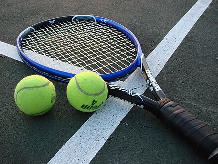

|
Tennis is a racket sport that is played either individually against a single opponent (singles) or between two teams of two players each (doubles). Each player uses a tennis racket strung with a cord to strike a hollow rubber ball covered with felt over or around a net and into the opponent's court. The object is to manoeuvre the ball in such a way that the opponent is not able to play a valid return. If a player is unable to return the ball successfully, the opponent scores a point. Playable at all levels of society and at all ages, tennis can be played by anyone who can hold a racket, including wheelchair users. The original forms of tennis developed in France during the late Middle Ages. The modern form of tennis originated in Birmingham, England, in the late 19th century as lawn tennis. It had close connections to various field (lawn) games such as croquet and bowls as well as to the older racket sport today called real tennis. The rules of modern tennis have changed little since the 1890s. Two exceptions are that until 1961 the server had to keep one foot on the ground at all times, and the adoption of the tiebreak in the 1970s. A recent addition to professional tennis has been the adoption of electronic review technology coupled with a point-challenge system, which allows a player to contest the line call of a point, a system known as Hawk-Eye. Tennis is played by millions of recreational players and is a popular worldwide spectator sport. The four Grand Slam tournaments (also referred to as the majors) are especially popular and are considered the highest level of competition for the sport. These tournaments are the Australian Open, played on hardcourts; the French Open, played on red clay courts; Wimbledon, played on grass courts; and the US Open, also played on hardcourts. Additionally, tennis was one of the original Olympic sports, and has been consistently competed in the Summer Olympic Games since 1988. |
 |
Types Of Tournaments
|
Fun Facts1. Tennis is believed to have originated in the monastic cloisters in northern France in the 12th century.2. Wimbledon, or the Wimbledon Championships, is the oldest tennis tournament in the world, and also considered to be the most prestigious. 3. Tennis is also an Olympic sport, and it can be played by wheelchair users. 4. The net which is placed at the centre of the court, parallel with the baselines, divides the court into two equal parts. |